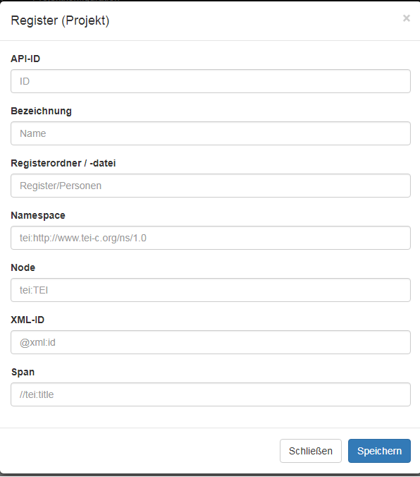

Ein neues Register einrichten
Wenn Sie ein Register benötigen, das nicht in ediarum enthalten ist, legen Sie dieses in eXist-db in der ediarum.DB-App an.
Prüfen Sie, ob das Register nicht in der Grundstruktur von ediarum enthalten
ist.
- Wählen Sie das Menü Verwaltung > Projekte aus.
- Klicken Sie das Feld Ihres eigenen Projekts an.
- Wählen Sie das Menü Projektkonfiguration > Register aus.
- Klicken Sie im Feld Neue Registeranbindung (Projekt) auf Hinzufügen.
-
Füllen Sie in dem geöffneten Fenster alle Parameter aus. Legen Sie eine neue Registeranbindung (Projekt) an, z.B. Maßangaben
Abbildung: Fenster für den Eintrag von Register-Parametern
Tabelle 1. Beispielhafte Werte, anhand eines Registers für Maßangaben Beispielwert Erklärung Struktur eines Registereintrags <item xml:id="mark_koelnisch"> <label>Kölnische Mark</label> </item>
API-ID units frei wählbar, wird bei den Editorvariablen angegeben (sollte keine Leer- oder Sonderzeichen enthalten) Bezeichnung Maße Name des Registers (frei wählbar) Registerordner/ -datei Register/Maße.xml Register/NAME.xml Namespace tei:http://www.tei-c.org/ns/1.0 tei:http://www.tei-c.org/ns/1.0 Node tei:item orientiert sich am Aufbau des Registers XML-ID @xml:id @xml:id Span //tei:label orientiert sich am Aufbau des Registers - Nach Bestätigung findet sich die eingerichtete Register-Schnittstelle in der Register-Liste. Unter dem Knopf API-Links sind die URLs für den Aufruf des Registers sichtbar.